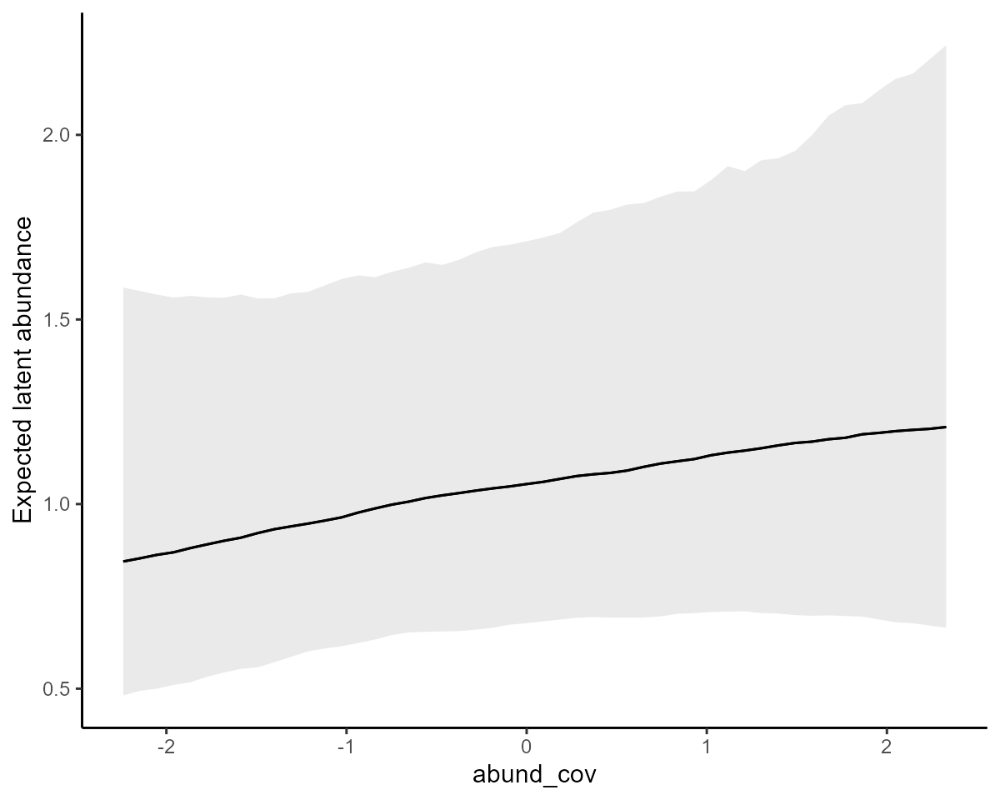
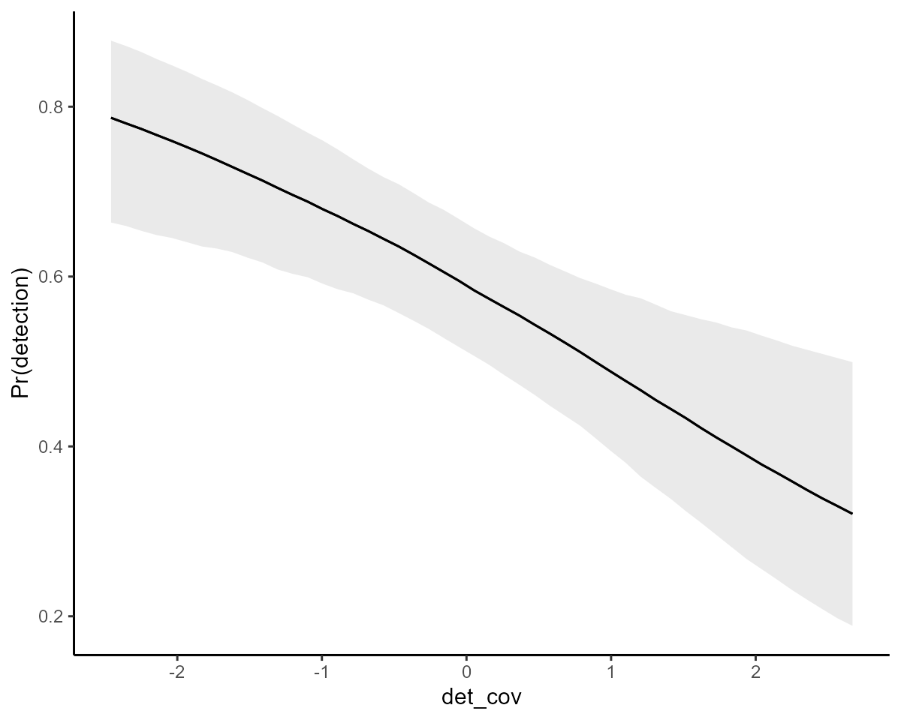

The purpose of this vignette is to show how the mvgam
package can be used to fit and interrogate N-mixture models for
population abundance counts made with imperfect detection.
N-mixture models
An N-mixture model is a fairly recent addition to the ecological modeller’s toolkit that is designed to make inferences about variation in the abundance of species when observations are imperfect (Royle 2004). Briefly, assume \(\boldsymbol{Y_{i,r}}\) is the number of individuals recorded at site \(i\) during replicate sampling observation \(r\) (recorded as a non-negative integer). If multiple replicate surveys are done within a short enough period to satisfy the assumption that the population remained closed (i.e. there was no substantial change in true population size between replicate surveys), we can account for the fact that observations aren’t perfect. This is done by assuming that these replicate observations are Binomial random variables that are parameterized by the true “latent” abundance \(N\) and a detection probability \(p\):
\[\begin{align*} \boldsymbol{Y_{i,r}} & \sim \text{Binomial}(N_i, p_r) \\ N_{i} & \sim \text{Poisson}(\lambda_i) \end{align*}\]
Using a set of linear predictors, we can estimate effects of covariates \(\boldsymbol{X}\) on the expected latent abundance (with a log link for \(\lambda\)) and, jointly, effects of possibly different covariates (call them \(\boldsymbol{Q}\)) on detection probability (with a logit link for \(p\)):
\[\begin{align*} log(\lambda) & = \beta \boldsymbol{X} \\ logit(p) & = \gamma \boldsymbol{Q}\end{align*}\]
mvgam can handle this type of model because it is
designed to propagate unobserved temporal processes that evolve
independently of the observation process in a State-space format. This
setup adapts well to N-mixture models because they can be thought of as
State-space models in which the latent state is a discrete variable
representing the “true” but unknown population size. This is very
convenient because we can incorporate any of the package’s diverse
effect types (i.e. multidimensional splines, time-varying effects,
monotonic effects, random effects etc…) into the linear predictors. All
that is required for this to work is a marginalization trick that allows
Stan’s sampling algorithms to handle discrete parameters
(see more about how this method of “integrating out” discrete parameters
works in this nice blog post by Maxwell Joseph).
The family nmix() is used to set up N-mixture models in
mvgam, but we still need to do a little bit of data
wrangling to ensure the data are set up in the correct format (this is
especially true when we have more than one replicate survey per time
period). The most important aspects are: (1) how we set up the
observation series and trend_map arguments to
ensure replicate surveys are mapped to the correct latent abundance
model and (2) the inclusion of a cap variable that defines
the maximum possible integer value to use for each observation when
estimating latent abundance. The two examples below give a reasonable
overview of how this can be done.
Example 1: a two-species system with nonlinear trends
First we will use a simple simulation in which multiple replicate
observations are taken at each timepoint for two different species. The
simulation produces observations at a single site over six years, with
five replicate surveys per year. Each species is simulated to have
different nonlinear temporal trends and different detection
probabilities. For now, detection probability is fixed (i.e. it does not
change over time or in association with any covariates). Notice that we
add the cap variable, which does not need to be static, to
define the maximum possible value that we think the latent abundance
could be for each timepoint. This simply needs to be large enough that
we get a reasonable idea of which latent N values are most likely,
without adding too much computational cost:
set.seed(999)
# Simulate observations for species 1, which shows a declining trend and 0.7 detection probability
data.frame(site = 1,
# five replicates per year; six years
replicate = rep(1:5, 6),
time = sort(rep(1:6, 5)),
species = 'sp_1',
# true abundance declines nonlinearly
truth = c(rep(28, 5),
rep(26, 5),
rep(23, 5),
rep(16, 5),
rep(14, 5),
rep(14, 5)),
# observations are taken with detection prob = 0.7
obs = c(rbinom(5, 28, 0.7),
rbinom(5, 26, 0.7),
rbinom(5, 23, 0.7),
rbinom(5, 15, 0.7),
rbinom(5, 14, 0.7),
rbinom(5, 14, 0.7))) %>%
# add 'series' information, which is an identifier of site, replicate and species
dplyr::mutate(series = paste0('site_', site,
'_', species,
'_rep_', replicate),
time = as.numeric(time),
# add a 'cap' variable that defines the maximum latent N to
# marginalize over when estimating latent abundance; in other words
# how large do we realistically think the true abundance could be?
cap = 100) %>%
dplyr::select(- replicate) -> testdat
# Now add another species that has a different temporal trend and a smaller
# detection probability (0.45 for this species)
testdat = testdat %>%
dplyr::bind_rows(data.frame(site = 1,
replicate = rep(1:5, 6),
time = sort(rep(1:6, 5)),
species = 'sp_2',
truth = c(rep(4, 5),
rep(7, 5),
rep(15, 5),
rep(16, 5),
rep(19, 5),
rep(18, 5)),
obs = c(rbinom(5, 4, 0.45),
rbinom(5, 7, 0.45),
rbinom(5, 15, 0.45),
rbinom(5, 16, 0.45),
rbinom(5, 19, 0.45),
rbinom(5, 18, 0.45))) %>%
dplyr::mutate(series = paste0('site_', site,
'_', species,
'_rep_', replicate),
time = as.numeric(time),
cap = 50) %>%
dplyr::select(-replicate))This data format isn’t too difficult to set up, but it does differ from the traditional multidimensional array setup that is commonly used for fitting N-mixture models in other software packages. Next we ensure that species and series IDs are included as factor variables, in case we’d like to allow certain effects to vary by species
testdat$species <- factor(testdat$species,
levels = unique(testdat$species))
testdat$series <- factor(testdat$series,
levels = unique(testdat$series))Preview the dataset to get an idea of how it is structured:
dplyr::glimpse(testdat)## Rows: 60
## Columns: 7
## $ site <dbl> 1, 1, 1, 1, 1, 1, 1, 1, 1, 1, 1, 1, 1, 1, 1, 1, 1, 1, 1, 1, 1,…
## $ time <dbl> 1, 1, 1, 1, 1, 2, 2, 2, 2, 2, 3, 3, 3, 3, 3, 4, 4, 4, 4, 4, 5,…
## $ species <fct> sp_1, sp_1, sp_1, sp_1, sp_1, sp_1, sp_1, sp_1, sp_1, sp_1, sp…
## $ truth <dbl> 28, 28, 28, 28, 28, 26, 26, 26, 26, 26, 23, 23, 23, 23, 23, 16…
## $ obs <int> 20, 19, 23, 17, 18, 21, 18, 21, 19, 18, 17, 16, 20, 11, 19, 9,…
## $ series <fct> site_1_sp_1_rep_1, site_1_sp_1_rep_2, site_1_sp_1_rep_3, site_…
## $ cap <dbl> 100, 100, 100, 100, 100, 100, 100, 100, 100, 100, 100, 100, 10…
head(testdat, 12)## site time species truth obs series cap
## 1 1 1 sp_1 28 20 site_1_sp_1_rep_1 100
## 2 1 1 sp_1 28 19 site_1_sp_1_rep_2 100
## 3 1 1 sp_1 28 23 site_1_sp_1_rep_3 100
## 4 1 1 sp_1 28 17 site_1_sp_1_rep_4 100
## 5 1 1 sp_1 28 18 site_1_sp_1_rep_5 100
## 6 1 2 sp_1 26 21 site_1_sp_1_rep_1 100
## 7 1 2 sp_1 26 18 site_1_sp_1_rep_2 100
## 8 1 2 sp_1 26 21 site_1_sp_1_rep_3 100
## 9 1 2 sp_1 26 19 site_1_sp_1_rep_4 100
## 10 1 2 sp_1 26 18 site_1_sp_1_rep_5 100
## 11 1 3 sp_1 23 17 site_1_sp_1_rep_1 100
## 12 1 3 sp_1 23 16 site_1_sp_1_rep_2 100Setting up the trend_map
Finally, we need to set up the trend_map object. This is
crucial for allowing multiple observations to be linked to the same
latent process model (see more information about this argument in the Shared latent states vignette). In this case, the
mapping operates by species and site to state that each set of replicate
observations from the same time point should all share the exact same
latent abundance model:
testdat %>%
# each unique combination of site*species is a separate process
dplyr::mutate(trend = as.numeric(factor(paste0(site, species)))) %>%
dplyr::select(trend, series) %>%
dplyr::distinct() -> trend_map
trend_map## trend series
## 1 1 site_1_sp_1_rep_1
## 2 1 site_1_sp_1_rep_2
## 3 1 site_1_sp_1_rep_3
## 4 1 site_1_sp_1_rep_4
## 5 1 site_1_sp_1_rep_5
## 6 2 site_1_sp_2_rep_1
## 7 2 site_1_sp_2_rep_2
## 8 2 site_1_sp_2_rep_3
## 9 2 site_1_sp_2_rep_4
## 10 2 site_1_sp_2_rep_5Notice how all of the replicates for species 1 in site 1 share the
same process (i.e. the same trend). This will ensure that
all replicates are Binomial draws of the same latent N.
Modelling with the nmix() family
Now we are ready to fit a model using mvgam(). This
model will allow each species to have different detection probabilities
and different temporal trends. We will use Cmdstan as the
backend, which by default will use Hamiltonian Monte Carlo for full
Bayesian inference
mod <- mvgam(
# the observation formula sets up linear predictors for
# detection probability on the logit scale
formula = obs ~ species - 1,
# the trend_formula sets up the linear predictors for
# the latent abundance processes on the log scale
trend_formula = ~ s(time, by = trend, k = 4) + species,
# the trend_map takes care of the mapping
trend_map = trend_map,
# nmix() family and data
family = nmix(),
data = testdat,
# priors can be set in the usual way
priors = c(prior(std_normal(), class = b),
prior(normal(1, 1.5), class = Intercept_trend)),
samples = 1000)View the automatically-generated Stan code to get a
sense of how the marginalization over latent N works
code(mod)## // Stan model code generated by package mvgam
## data {
## int<lower=0> total_obs; // total number of observations
## int<lower=0> n; // number of timepoints per series
## int<lower=0> n_sp_trend; // number of trend smoothing parameters
## int<lower=0> n_lv; // number of dynamic factors
## int<lower=0> n_series; // number of series
## matrix[n_series, n_lv] Z; // matrix mapping series to latent states
## int<lower=0> num_basis; // total number of basis coefficients
## int<lower=0> num_basis_trend; // number of trend basis coefficients
## vector[num_basis_trend] zero_trend; // prior locations for trend basis coefficients
## matrix[total_obs, num_basis] X; // mgcv GAM design matrix
## matrix[n * n_lv, num_basis_trend] X_trend; // trend model design matrix
## array[n, n_series] int<lower=0> ytimes; // time-ordered matrix (which col in X belongs to each [time, series] observation?)
## array[n, n_lv] int ytimes_trend;
## int<lower=0> n_nonmissing; // number of nonmissing observations
## array[total_obs] int<lower=0> cap; // upper limits of latent abundances
## array[total_obs] int ytimes_array; // sorted ytimes
## array[n, n_series] int<lower=0> ytimes_pred; // time-ordered matrix for prediction
## int<lower=0> K_groups; // number of unique replicated observations
## int<lower=0> K_reps; // maximum number of replicate observations
## array[K_groups] int<lower=0> K_starts; // col of K_inds where each group starts
## array[K_groups] int<lower=0> K_stops; // col of K_inds where each group ends
## array[K_groups, K_reps] int<lower=0> K_inds; // indices of replicated observations
## matrix[3, 6] S_trend1; // mgcv smooth penalty matrix S_trend1
## matrix[3, 6] S_trend2; // mgcv smooth penalty matrix S_trend2
## array[total_obs] int<lower=0> flat_ys; // flattened observations
## }
## transformed data {
## matrix[total_obs, num_basis] X_ordered = X[ytimes_array, : ];
## array[K_groups] int<lower=0> Y_max;
## array[K_groups] int<lower=0> N_max;
## for (k in 1 : K_groups) {
## Y_max[k] = max(flat_ys[K_inds[k, K_starts[k] : K_stops[k]]]);
## N_max[k] = max(cap[K_inds[k, K_starts[k] : K_stops[k]]]);
## }
## }
## parameters {
## // raw basis coefficients
## vector[num_basis] b_raw;
## vector[num_basis_trend] b_raw_trend;
##
## // smoothing parameters
## vector<lower=0>[n_sp_trend] lambda_trend;
## }
## transformed parameters {
## // detection probability
## vector[total_obs] p;
##
## // latent states
## matrix[n, n_lv] LV;
##
## // latent states and loading matrix
## vector[n * n_lv] trend_mus;
## matrix[n, n_series] trend;
##
## // basis coefficients
## vector[num_basis] b;
## vector[num_basis_trend] b_trend;
##
## // observation model basis coefficients
## b[1 : num_basis] = b_raw[1 : num_basis];
##
## // process model basis coefficients
## b_trend[1 : num_basis_trend] = b_raw_trend[1 : num_basis_trend];
##
## // detection probability
## p = X_ordered * b;
##
## // latent process linear predictors
## trend_mus = X_trend * b_trend;
## for (j in 1 : n_lv) {
## LV[1 : n, j] = trend_mus[ytimes_trend[1 : n, j]];
## }
##
## // derived latent states
## trend = LV * Z';
## }
## model {
## // prior for speciessp_1...
## b_raw[1] ~ std_normal();
##
## // prior for speciessp_2...
## b_raw[2] ~ std_normal();
##
## // dynamic process models
##
## // prior for (Intercept)_trend...
## b_raw_trend[1] ~ normal(1, 1.5);
##
## // prior for speciessp_2_trend...
## b_raw_trend[2] ~ std_normal();
##
## // prior for s(time):trendtrend1_trend...
## b_raw_trend[3 : 5] ~ multi_normal_prec(zero_trend[3 : 5],
## S_trend1[1 : 3, 1 : 3]
## * lambda_trend[1]
## + S_trend1[1 : 3, 4 : 6]
## * lambda_trend[2]);
##
## // prior for s(time):trendtrend2_trend...
## b_raw_trend[6 : 8] ~ multi_normal_prec(zero_trend[6 : 8],
## S_trend2[1 : 3, 1 : 3]
## * lambda_trend[3]
## + S_trend2[1 : 3, 4 : 6]
## * lambda_trend[4]);
## lambda_trend ~ normal(5, 30);
## {
## // likelihood functions
## array[total_obs] real flat_trends;
## array[total_obs] real flat_ps;
## flat_trends = to_array_1d(trend);
## flat_ps = to_array_1d(p);
##
## // loop over replicate sampling window (each site*time*species combination)
## for (k in 1 : K_groups) {
## // all log_lambdas are identical because they represent site*time
## // covariates; so just use the first measurement
## real log_lambda = flat_trends[K_inds[k, 1]];
## vector[N_max[k] - Y_max[k] + 1] terms;
## int l = 0;
##
## // marginalize over latent abundance
## for (Ni in Y_max[k] : N_max[k]) {
## l = l + 1;
## // factor for poisson prob of latent Ni; compute
##
## // only once per sampling window
## terms[l] = poisson_log_lpmf(Ni | log_lambda)
## + // for each replicate observation, binomial prob observed is
## // computed in a vectorized statement
## binomial_logit_lpmf(flat_ys[K_inds[k, K_starts[k] : K_stops[k]]] | Ni, flat_ps[K_inds[k, K_starts[k] : K_stops[k]]]);
## }
## target += log_sum_exp(terms);
## }
## }
## }
## generated quantities {
## vector[n_lv] penalty = rep_vector(1e12, n_lv);
## vector[n_sp_trend] rho_trend = log(lambda_trend);
## }The posterior summary of this model shows that it has converged nicely
summary(mod)## GAM observation formula:
## obs ~ species - 1
##
## GAM process formula:
## ~s(time, by = trend, k = 4) + species
##
## Family:
## nmix
##
## Link function:
## log
##
## Trend model:
## None
##
## N process models:
## 2
##
## N series:
## 10
##
## N timepoints:
## 6
##
## Status:
## Fitted using Stan
## 4 chains, each with iter = 1500; warmup = 500; thin = 1
## Total post-warmup draws = 4000
##
##
## GAM observation model coefficient (beta) estimates:
## 2.5% 50% 97.5% Rhat n_eff
## speciessp_1 -0.29 0.700 1.4 1 1637
## speciessp_2 -1.20 0.019 0.9 1 1895
##
## GAM process model coefficient (beta) estimates:
## 2.5% 50% 97.5% Rhat n_eff
## (Intercept)_trend 2.700 3.0000 3.500 1 1646
## speciessp_2_trend -1.200 -0.6300 0.110 1 1538
## s(time):trendtrend1.1_trend -0.073 0.0160 0.210 1 827
## s(time):trendtrend1.2_trend -0.220 0.0084 0.250 1 1832
## s(time):trendtrend1.3_trend -0.460 -0.2500 -0.041 1 1517
## s(time):trendtrend2.1_trend -0.200 -0.0130 0.090 1 1097
## s(time):trendtrend2.2_trend -0.200 0.0270 0.390 1 1038
## s(time):trendtrend2.3_trend 0.054 0.3300 0.630 1 2973
##
## Approximate significance of GAM process smooths:
## edf F p-value
## s(time):seriestrend1 0.439 0.18 0.41
## s(time):seriestrend2 0.690 0.27 0.40
##
## Stan MCMC diagnostics:
## n_eff / iter looks reasonable for all parameters
## Rhat looks reasonable for all parameters
## 0 of 4000 iterations ended with a divergence (0%)
## 0 of 4000 iterations saturated the maximum tree depth of 12 (0%)
## E-FMI indicated no pathological behavior
##
## Samples were drawn using NUTS(diag_e) at Tue Feb 13 10:37:12 AM 2024.
## For each parameter, n_eff is a crude measure of effective sample size,
## and Rhat is the potential scale reduction factor on split MCMC chains
## (at convergence, Rhat = 1)loo() functionality works just as it does for all
mvgam models to aid in model comparison / selection (though
note that Pareto K values often give warnings for mixture models so
these may not be too helpful)
loo(mod)## Warning: Some Pareto k diagnostic values are too high. See help('pareto-k-diagnostic') for details.##
## Computed from 4000 by 60 log-likelihood matrix
##
## Estimate SE
## elpd_loo -222.5 12.6
## p_loo 76.1 11.5
## looic 445.0 25.3
## ------
## Monte Carlo SE of elpd_loo is NA.
##
## Pareto k diagnostic values:
## Count Pct. Min. n_eff
## (-Inf, 0.5] (good) 21 35.0% 1921
## (0.5, 0.7] (ok) 8 13.3% 999
## (0.7, 1] (bad) 5 8.3% 32
## (1, Inf) (very bad) 26 43.3% 2
## See help('pareto-k-diagnostic') for details.Plot the estimated smooths of time from each species’ latent abundance process (on the log scale)
plot(mod, type = 'smooths', trend_effects = TRUE)
marginaleffects support allows for more useful
prediction-based interrogations on different scales. Objects that use
family nmix() have a few additional prediction scales that
can be used (i.e. link, response,
detection or latent_N). For example, here are
the estimated detection probabilities per species, which show that the
model has done a nice job of estimating these parameters:
plot_predictions(mod, condition = 'species',
type = 'detection') +
ylab('Pr(detection)') +
ylim(c(0, 1)) +
theme_classic() +
theme(legend.position = 'none')A common goal in N-mixture modelling is to estimate the true latent abundance. The model has automatically generated predictions for the unknown latent abundance that are conditional on the observations. We can extract these and produce decent plots using a small function
hc <- hindcast(mod, type = 'latent_N')
# Function to plot latent abundance estimates vs truth
plot_latentN = function(hindcasts, data, species = 'sp_1'){
all_series <- unique(data %>%
dplyr::filter(species == !!species) %>%
dplyr::pull(series))
# Grab the first replicate that represents this series
# so we can get the true simulated values
series <- as.numeric(all_series[1])
truths <- data %>%
dplyr::arrange(time, series) %>%
dplyr::filter(series == !!levels(data$series)[series]) %>%
dplyr::pull(truth)
# In case some replicates have missing observations,
# pull out predictions for ALL replicates and average over them
hcs <- do.call(rbind, lapply(all_series, function(x){
ind <- which(names(hindcasts$hindcasts) %in% as.character(x))
hindcasts$hindcasts[[ind]]
}))
# Calculate posterior empirical quantiles of predictions
pred_quantiles <- data.frame(t(apply(hcs, 2, function(x)
quantile(x, probs = c(0.05, 0.2, 0.3, 0.4,
0.5, 0.6, 0.7, 0.8, 0.95)))))
pred_quantiles$time <- 1:NROW(pred_quantiles)
pred_quantiles$truth <- truths
# Grab observations
data %>%
dplyr::filter(series %in% all_series) %>%
dplyr::select(time, obs) -> observations
# Plot
ggplot(pred_quantiles, aes(x = time, group = 1)) +
geom_ribbon(aes(ymin = X5., ymax = X95.), fill = "#DCBCBC") +
geom_ribbon(aes(ymin = X30., ymax = X70.), fill = "#B97C7C") +
geom_line(aes(x = time, y = truth),
colour = 'black', linewidth = 1) +
geom_point(aes(x = time, y = truth),
shape = 21, colour = 'white', fill = 'black',
size = 2.5) +
geom_jitter(data = observations, aes(x = time, y = obs),
width = 0.06,
shape = 21, fill = 'darkred', colour = 'white', size = 2.5) +
labs(y = 'Latent abundance (N)',
x = 'Time',
title = species)
}Latent abundance plots vs the simulated truths for each species are shown below. Here, the red points show the imperfect observations, the black line shows the true latent abundance, and the ribbons show credible intervals of our estimates:
plot_latentN(hc, testdat, species = 'sp_1')
plot_latentN(hc, testdat, species = 'sp_2')
We can see that estimates for both species have correctly captured the true temporal variation and magnitudes in abundance
Example 2: a larger survey with possible nonlinear effects
Now for another example with a larger dataset. We will use data from
Jeff Doser’s simulation example from the wonderful
spAbundance package. The simulated data include one
continuous site-level covariate, one factor site-level covariate and two
continuous sample-level covariates. This example will allow us to
examine how we can include possibly nonlinear effects in the latent
process and detection probability models.
Download the data and grab observations / covariate measurements for one species
# Date link
load(url('https://github.com/doserjef/spAbundance/raw/main/data/dataNMixSim.rda'))
data.one.sp <- dataNMixSim
# Pull out observations for one species
data.one.sp$y <- data.one.sp$y[1, , ]
# Abundance covariates that don't change across repeat sampling observations
abund.cov <- dataNMixSim$abund.covs[, 1]
abund.factor <- as.factor(dataNMixSim$abund.covs[, 2])
# Detection covariates that can change across repeat sampling observations
# Note that `NA`s are not allowed for covariates in mvgam, so we randomly
# impute them here
det.cov <- dataNMixSim$det.covs$det.cov.1[,]
det.cov[is.na(det.cov)] <- rnorm(length(which(is.na(det.cov))))
det.cov2 <- dataNMixSim$det.covs$det.cov.2
det.cov2[is.na(det.cov2)] <- rnorm(length(which(is.na(det.cov2))))Next we wrangle into the appropriate ‘long’ data format, adding
indicators of time and series for working in
mvgam. We also add the cap variable to
represent the maximum latent N to marginalize over for each
observation
mod_data <- do.call(rbind,
lapply(1:NROW(data.one.sp$y), function(x){
data.frame(y = data.one.sp$y[x,],
abund_cov = abund.cov[x],
abund_fac = abund.factor[x],
det_cov = det.cov[x,],
det_cov2 = det.cov2[x,],
replicate = 1:NCOL(data.one.sp$y),
site = paste0('site', x))
})) %>%
dplyr::mutate(species = 'sp_1',
series = as.factor(paste0(site, '_', species, '_', replicate))) %>%
dplyr::mutate(site = factor(site, levels = unique(site)),
species = factor(species, levels = unique(species)),
time = 1,
cap = max(data.one.sp$y, na.rm = TRUE) + 20)The data include observations for 225 sites with three replicates per site, though some observations are missing
NROW(mod_data)## [1] 675
dplyr::glimpse(mod_data)## Rows: 675
## Columns: 11
## $ y <int> 1, NA, NA, NA, 2, 2, NA, 1, NA, NA, 0, 1, 0, 0, 0, 0, NA, NA…
## $ abund_cov <dbl> -0.3734384, -0.3734384, -0.3734384, 0.7064305, 0.7064305, 0.…
## $ abund_fac <fct> 3, 3, 3, 4, 4, 4, 9, 9, 9, 2, 2, 2, 3, 3, 3, 2, 2, 2, 1, 1, …
## $ det_cov <dbl> -1.2827999, -0.3171904, -1.1369443, -0.2357530, 0.1954809, 0…
## $ det_cov2 <dbl> 2.0304731, 1.1052208, -0.7969389, 0.4753085, 1.0455536, 1.91…
## $ replicate <int> 1, 2, 3, 1, 2, 3, 1, 2, 3, 1, 2, 3, 1, 2, 3, 1, 2, 3, 1, 2, …
## $ site <fct> site1, site1, site1, site2, site2, site2, site3, site3, site…
## $ species <fct> sp_1, sp_1, sp_1, sp_1, sp_1, sp_1, sp_1, sp_1, sp_1, sp_1, …
## $ series <fct> site1_sp_1_1, site1_sp_1_2, site1_sp_1_3, site2_sp_1_1, site…
## $ time <dbl> 1, 1, 1, 1, 1, 1, 1, 1, 1, 1, 1, 1, 1, 1, 1, 1, 1, 1, 1, 1, …
## $ cap <dbl> 33, 33, 33, 33, 33, 33, 33, 33, 33, 33, 33, 33, 33, 33, 33, …
head(mod_data)## y abund_cov abund_fac det_cov det_cov2 replicate site species
## 1 1 -0.3734384 3 -1.2827999 2.0304731 1 site1 sp_1
## 2 NA -0.3734384 3 -0.3171904 1.1052208 2 site1 sp_1
## 3 NA -0.3734384 3 -1.1369443 -0.7969389 3 site1 sp_1
## 4 NA 0.7064305 4 -0.2357530 0.4753085 1 site2 sp_1
## 5 2 0.7064305 4 0.1954809 1.0455536 2 site2 sp_1
## 6 2 0.7064305 4 0.9673034 1.9197118 3 site2 sp_1
## series time cap
## 1 site1_sp_1_1 1 33
## 2 site1_sp_1_2 1 33
## 3 site1_sp_1_3 1 33
## 4 site2_sp_1_1 1 33
## 5 site2_sp_1_2 1 33
## 6 site2_sp_1_3 1 33The final step for data preparation is of course the
trend_map, which sets up the mapping between observation
replicates and the latent abundance models. This is done in the same way
as in the example above
mod_data %>%
# each unique combination of site*species is a separate process
dplyr::mutate(trend = as.numeric(factor(paste0(site, species)))) %>%
dplyr::select(trend, series) %>%
dplyr::distinct() -> trend_map
trend_map %>%
dplyr::arrange(trend) %>%
head(12)## trend series
## 1 1 site100_sp_1_1
## 2 1 site100_sp_1_2
## 3 1 site100_sp_1_3
## 4 2 site101_sp_1_1
## 5 2 site101_sp_1_2
## 6 2 site101_sp_1_3
## 7 3 site102_sp_1_1
## 8 3 site102_sp_1_2
## 9 3 site102_sp_1_3
## 10 4 site103_sp_1_1
## 11 4 site103_sp_1_2
## 12 4 site103_sp_1_3Now we are ready to fit a model using mvgam(). Here we
will use penalized splines for each of the continuous covariate effects
to detect possible nonlinear associations. We also showcase how
mvgam can make use of the different approximation
algorithms available in Stan by using the meanfield
variational Bayes approximator (this reduces computation time to around
12 seconds for this example)
mod <- mvgam(
# effects of covariates on detection probability;
# here we use penalized splines for both continuous covariates
formula = y ~ s(det_cov, k = 4) + s(det_cov2, k = 4),
# effects of the covariates on latent abundance;
# here we use a penalized spline for the continuous covariate and
# hierarchical intercepts for the factor covariate
trend_formula = ~ s(abund_cov, k = 4) +
s(abund_fac, bs = 're'),
# link multiple observations to each site
trend_map = trend_map,
# nmix() family and supplied data
family = nmix(),
data = mod_data,
# standard normal priors on key regression parameters
priors = c(prior(std_normal(), class = 'b'),
prior(std_normal(), class = 'Intercept'),
prior(std_normal(), class = 'Intercept_trend'),
prior(std_normal(), class = 'sigma_raw_trend')),
# use Stan's variational inference for quicker results
algorithm = 'meanfield',
samples = 1000)Inspect the model summary but don’t bother looking at estimates for all individual spline coefficients. Notice how we no longer receive information on convergence because we did not use MCMC sampling for this model
summary(mod, include_betas = FALSE)## GAM observation formula:
## y ~ s(det_cov, k = 3) + s(det_cov2, k = 3)
##
## GAM process formula:
## ~s(abund_cov, k = 3) + s(abund_fac, bs = "re")
##
## Family:
## nmix
##
## Link function:
## log
##
## Trend model:
## None
##
## N process models:
## 225
##
## N series:
## 675
##
## N timepoints:
## 1
##
## Status:
## Fitted using Stan
## 1 chains, each with iter = 1000; warmup = ; thin = 1
## Total post-warmup draws = 1000
##
##
## GAM observation model coefficient (beta) estimates:
## 2.5% 50% 97.5% Rhat n.eff
## (Intercept) 0.098 0.38 0.65 NaN NaN
##
## Approximate significance of GAM observation smooths:
## edf Chi.sq p-value
## s(det_cov) 1.40 71.6 0.00028 ***
## s(det_cov2) 1.71 274.1 1.3e-06 ***
## ---
## Signif. codes: 0 '***' 0.001 '**' 0.01 '*' 0.05 '.' 0.1 ' ' 1
##
## GAM process model coefficient (beta) estimates:
## 2.5% 50% 97.5% Rhat n.eff
## (Intercept)_trend -0.62 -0.47 -0.32 NaN NaN
##
## GAM process model group-level estimates:
## 2.5% 50% 97.5% Rhat n.eff
## mean(s(abund_fac))_trend 0.180 0.36 0.54 NaN NaN
## sd(s(abund_fac))_trend 0.096 0.19 0.37 NaN NaN
##
## Approximate significance of GAM process smooths:
## edf F p-value
## s(abund_cov) 0.972 0.58 0.90
## s(abund_fac) 8.769 0.36 0.74
##
## Posterior approximation used: no diagnostics to computeAgain we can make use of marginaleffects support for
interrogating the model through targeted predictions. First, we can
inspect the estimated average detection probability
avg_predictions(mod, type = 'detection')##
## Estimate 2.5 % 97.5 %
## 0.577 0.52 0.632
##
## Columns: estimate, conf.low, conf.high
## Type: detectionNext investigate estimated effects of covariates on latent abundance
using the conditional_effects() function and specifying
type = 'link'; this will return plots on the expectation
scale
abund_plots <- plot(conditional_effects(mod,
type = 'link',
effects = c('abund_cov',
'abund_fac')),
plot = FALSE)The effect of the continuous covariate on expected latent abundance
abund_plots[[1]] +
ylab('Expected latent abundance')
The effect of the factor covariate on expected latent abundance, estimated as a hierarchical random effect
abund_plots[[2]] +
ylab('Expected latent abundance')
Now we can investigate estimated effects of covariates on detection
probability using type = 'detection'
det_plots <- plot(conditional_effects(mod,
type = 'detection',
effects = c('det_cov',
'det_cov2')),
plot = FALSE)The covariate smooths were estimated to be somewhat nonlinear on the logit scale according to the model summary (based on their approximate significances). But inspecting conditional effects of each covariate on the probability scale is more intuitive and useful
det_plots[[1]] +
ylab('Pr(detection)')
det_plots[[2]] +
ylab('Pr(detection)')
More targeted predictions are also easy with
marginaleffects support. For example, we can ask: How does
detection probability change as we change both detection
covariates?
fivenum_round = function(x)round(fivenum(x, na.rm = TRUE), 2)
plot_predictions(mod,
newdata = datagrid(det_cov = unique,
det_cov2 = fivenum_round),
by = c('det_cov', 'det_cov2'),
type = 'detection') +
theme_classic() +
ylab('Pr(detection)')
The model has found support for some important covariate effects, but of course we’d want to interrogate how well the model predicts and think about possible spatial effects to capture unmodelled variation in latent abundance (which can easily be incorporated into both linear predictors using spatial smooths).
Further reading
The following papers and resources offer useful material about N-mixture models for ecological population dynamics investigations:
Guélat, Jérôme, and Kéry, Marc. “Effects of Spatial Autocorrelation and Imperfect Detection on Species Distribution Models.” Methods in Ecology and Evolution 9 (2018): 1614–25.
Kéry, Marc, and Royle Andrew J. “Applied hierarchical modeling in ecology: Analysis of distribution, abundance and species richness in R and BUGS: Volume 2: Dynamic and advanced models”. London, UK: Academic Press (2020).
Royle, Andrew J. “N‐mixture models for estimating population size from spatially replicated counts.” Biometrics 60.1 (2004): 108-115.